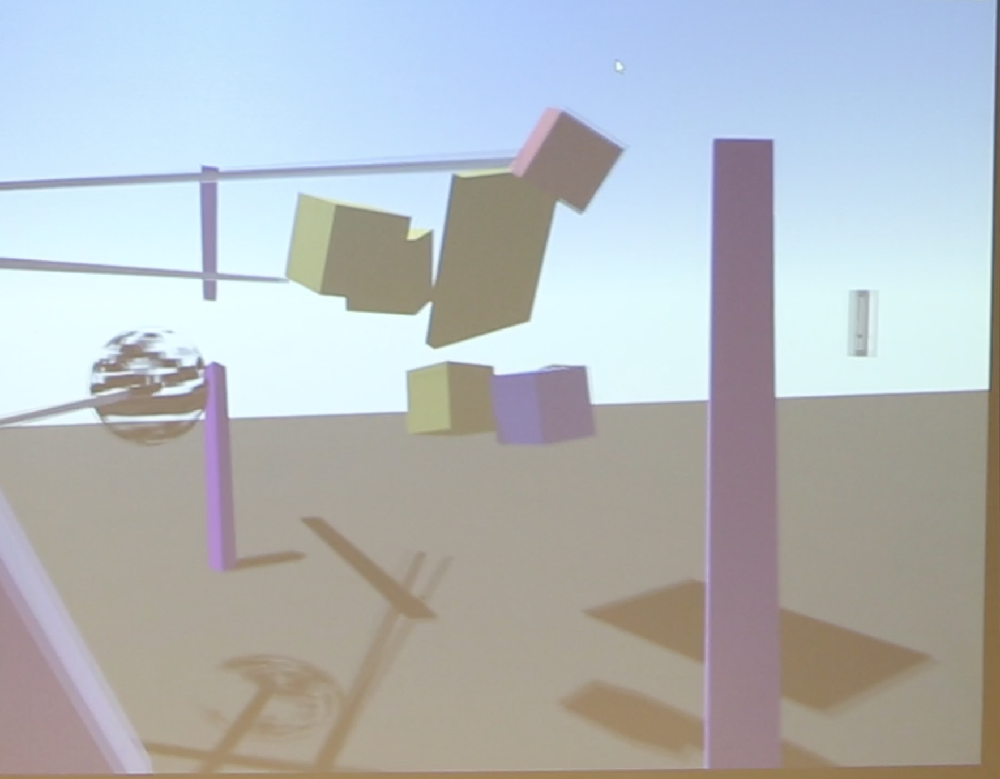
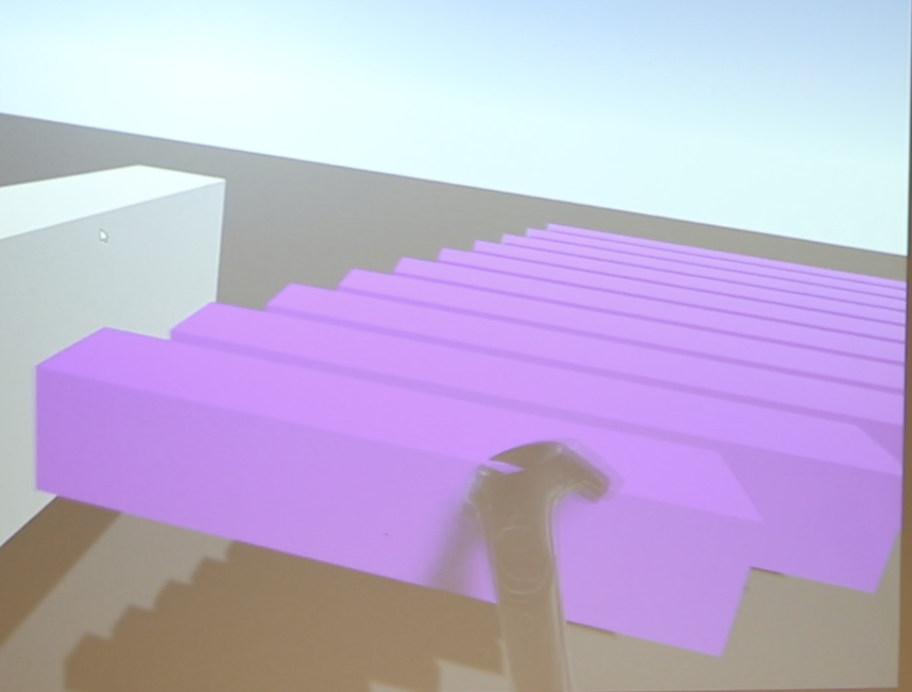
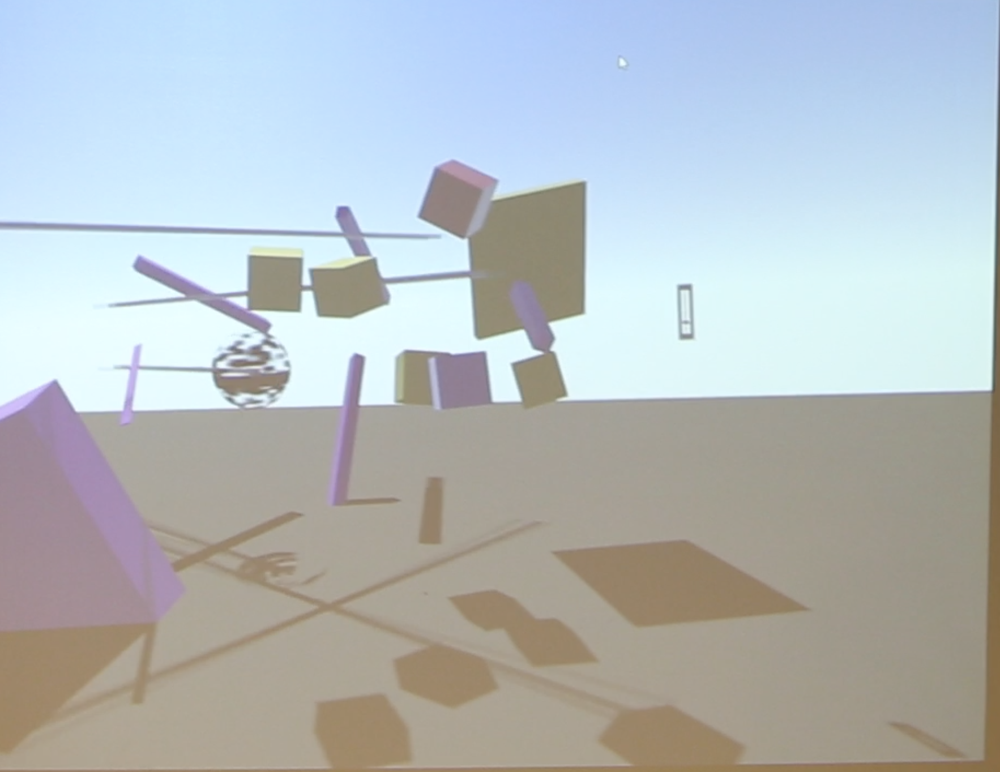

make music in virtual space :)

Using the spacial aspects of virtual reality, users can manipulate instruments and sounds to create sequences and rythmns to play music with. The goal is to have a real-time multiplayer aspect, allowing users to play music together.
In the latest iteration of kinetics, mallet-style collision based instruments can be grabbed and moved, as well as stretched with both hands, allowing the user to change the pitch and layout of their sounds. Since the sounds can be shaped and moved anywhere, the introduction of a simple spinning apparatus in this version affords a rythmnic and melodic sequencing machine, complete with a tempo control.
In later iterations, I would like to have more virtual-physical interactions for sequencing and composition, as well as more instruments and sounds to be manipulated. I would also like to utilize the physics engine to make chaotic sound triggering systems.
Using Unity and VRTK with SteamVR for the HTC Vive, I learned that I will need to focus more on making compatible and modular base sound generators for instruments, in order to continue designing more instruments with shared objects.
I also learned that the interface of this software is the space itself, since the user is directly interacting with the sound objects. I would also like to explore this relationship between the environment, the interface (as a music software), and the user.
My main challenge is my lack of experience in coding a polished interactive Unity-based software. I want to add more instruments, but will have plan better or end up constantly backtracking and changing the base sound object in order to fit with all of the requirements of the latest instrument.
The object-oriented programming will have to be optimized as the multiplayer aspect is integrated, and I will have to go deeper into the Unity default processes in order to optomize the accuracy of the physics and sound engine working together. This could also indicate a need to design more synced sequence-based instruments, which take the task of keeping a solid time out of the hands of the users, and allow them to focus on composition and playing around.